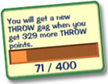
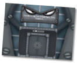

|

You can see how many skill points you will need to earn your new gag by looking on the Gag page of your Shticker book. You can also see this information on the left side of your battle menu.
When you’ve earned enough skill points battling the Cogs, you’ll get a new, more powerful gag. |
| You can earn skill points faster by taking over Cog buildings, because the skill credit is multiplied on higher floors:  Floor 1: x1.0 Floor 2: x1.5 Floor 3: x2.0 Floor 4: x2.5 Floor 5: x3.0 |
| Skill credit in street battles is doubled during Cog invasions. |
|
When Toon HQ thinks you’re ready to start training a new type of gag, they’ll offer you a special ToonTask to get things started. Finish this task to prove you’re ready for more!
When you’ve finished this task, you’ll be able to choose the type of gag you want to train for. Every Toon starts with Squirt and Throw, but from there the choice is yours. Choose wisely, because only six out of seven tracks will be made available to any Toon. Each gag track has its strengths and weaknesses. It’s a good idea to find some Toons that already have the gags you’re thinking about training for, and see how they use them. This might help you decide if it’s right for you. Choice 1: Sound or Toon-Up Choice 2: Drop or Lure Choice 3: Trap and (Sound or Toon-Up - whichever was not chosen first) Choice 4: Whatever is left Training for a new gag track requires the completion of 15 ToonTasks. Each time you complete a gag training task, one of the spots on the Gag Track Training page of your Shticker Book is filled in. These tasks don’t all come one after the other, so be patient! When you’ve completed all 15 tasks, you’ll need to finish just one last ToonTask to earn your new type of gag! |